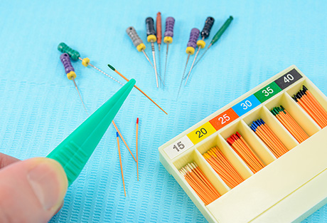
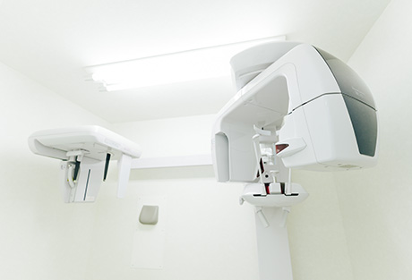
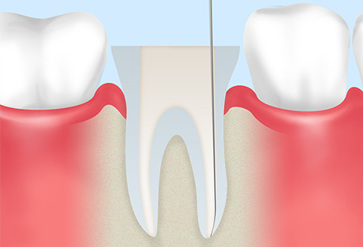
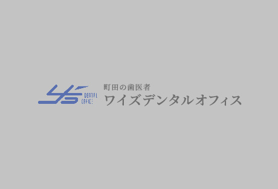
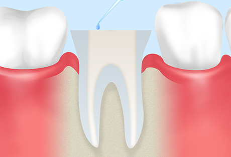
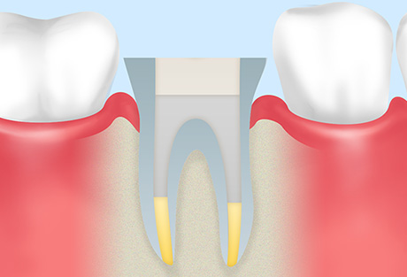

精密な根管治療をご提供します
通常のむし歯治療と異なり、「根管治療を受けるのは初めて」という方も多いではないでしょうか。そこでこちらでは町田市の歯医者「ワイズデンタルオフィス」が、当院の根管治療の流れをご紹介します。併せて費用についてもご案内しますので、参考にしてください。

根管治療の流れについて
STEP 01 口腔内検査およびX線写真によるチェック

まず目視およびマイクロスコープを用いて患部を確認します。その後X線写真を角度を変えて複数枚撮影します。さまざまな角度から、病変の大きさや根管の湾曲・枝分かれの度合いなどをチェックします。
STEP 02 カウンセリング
撮影したＸ線写真や口腔内写真をもとに、現在の状態についてくわしくご説明します。根管治療を最後まで確実に進めるには、患者様のご理解が欠かせません。わかないことはもちろん、ご要望などがありましたら何でもご遠慮なくお伝えください。
STEP 03 マイクロスコープを使った歯のチェック

根管の中をマイクロスコープで拡大して確認しながら、むし歯菌に冒された神経や血管を取り除きます。
STEP 04 隔壁ラバーダム防湿による感染防止

歯の周りに防波堤を作り、ラバーダム防湿で覆います。これにより、治療中に根管の中に唾液とともに細菌が入り込んだり、充填する薬剤が外に漏れたりするのを防ぎます。
STEP 05 根管内のチェック
マイクロスコープを使って根管の中をチェックし、見逃している汚染部分がないか確認しながら、感染源を徹底的に除去します。
STEP 06 根管長測定
Ｘ線写真を用いて、歯根の先端まで根管が通っているか確認し、先端の狭い部分までしっか長さを測ります
STEP 07 根管拡大
専用の器材を使って根管を拡大し、洗浄や薬剤の充填をしやすくします。
STEP 08 根管内の洗浄

根管内を念入りに洗浄し、目に見えない細菌までしっかり除去します。これが適切に行えていないと、治療後に炎症を招く原因になることもあります。
STEP 09 ポイント試適
歯根の先まで過不足なく薬剤をしっかり充填できるかを、X線写真などを使用しながら確認します。
STEP 10 根管充填

根管の状態を確認しながら、ガッタパーチャという薬剤を歯根の先までしっかりと充填します。きちんと詰まっているか、最後にX線写真でチェックします。
根管治療の費用について
根管治療（抜髄・初めての根管治療）
| 前歯部 （1～2回） | ¥52,500 |
|---|---|
| 小臼歯 （1～2回） | ¥57,500 |
| 大臼歯 （2～3回） | ¥78,750 |
再根管治療（以前に根管治療を受けた歯）
| 前歯部 （1～2回） | ¥52,500 |
|---|---|
| 小臼歯 （1～2回） | ¥78,750 |
| 大臼歯 （2～4回） | ¥105,000 |
外科的歯内両方
| 前歯部 （1回） | ¥78,750 |
|---|---|
| 小臼歯 （1回） | ¥78,750 |
| 大臼歯 （1回） | ¥105,000 |
※料金はすべて税込みです。
※料金は、根管の数や湾曲度、破壊された程度によって異なります。
むし歯・歯周病にならないために「予防歯科・定期検診」